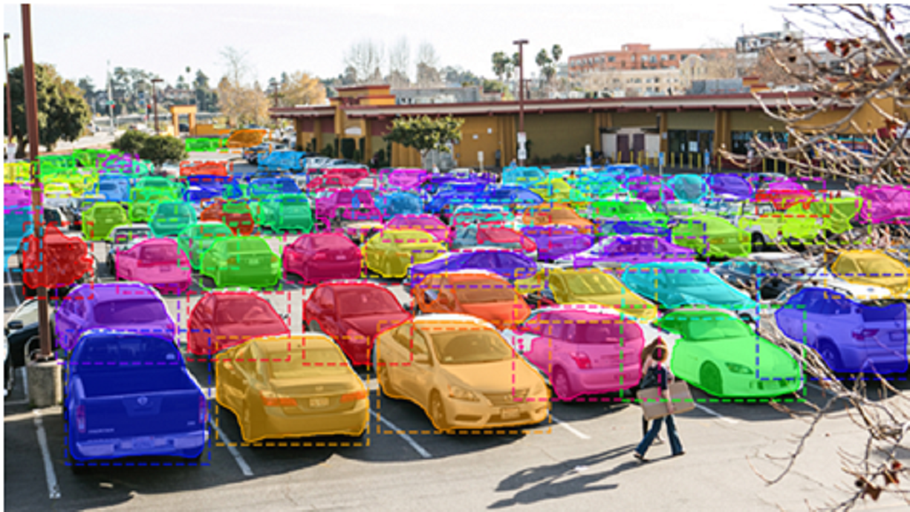
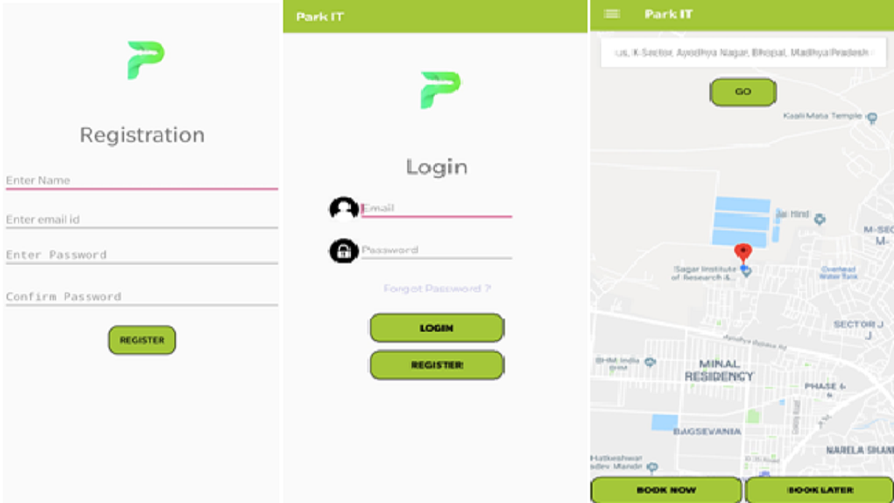
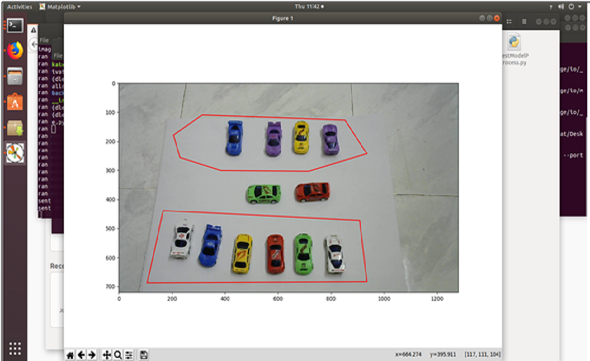
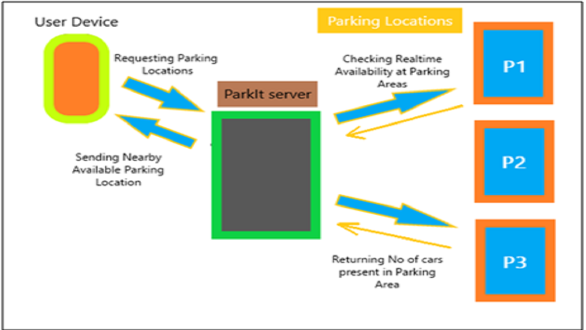
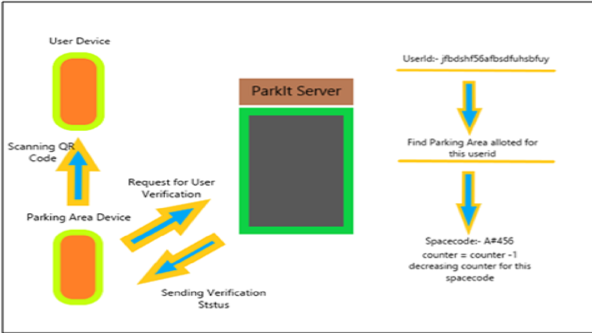
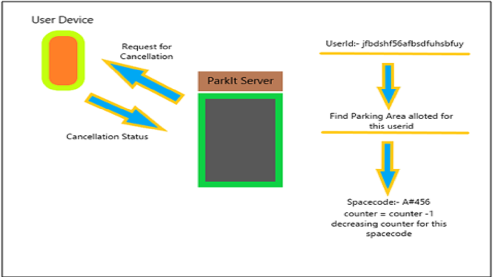
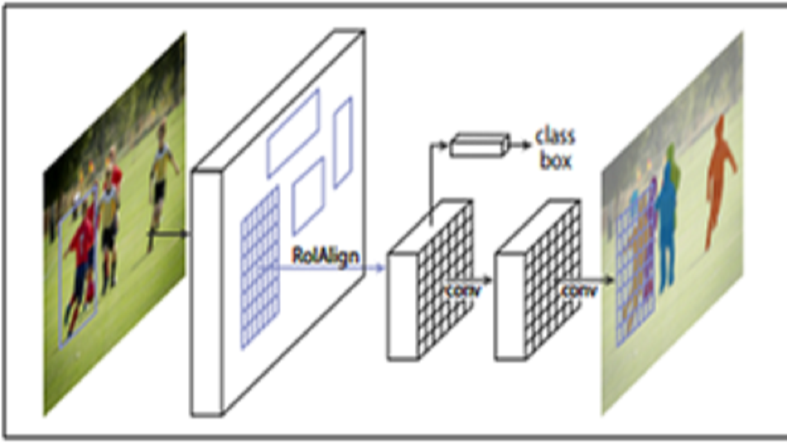
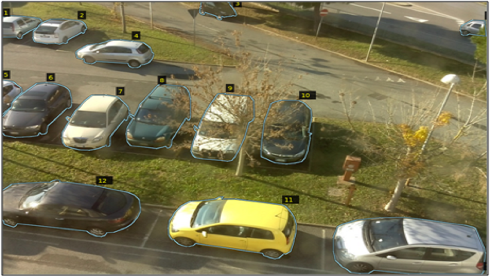

Introduction
India is the world’s fourth largest automotive market with limited parking spaces. Improper parking of vehicles causes traffic congestion on most streets and roads. In this project we have developed a solution in which the user will be suggested the nearest parking spot according to the availability of the parking space in that parking lot. Our system uses cameras and state-of-the-art object detection methods to identify vacant spaces in parking lots. Our system can be adapted to both indoor and outdoor parking spaces. Android will be used for interfacing with the user and guiding the user to the destination location. Django framework and tensorflow are used on the server.
Need For Park It
India is the world’s fourth largest automotive market with limited parking spaces. Improper parking of vehicles causes traffic congestion on most streets and roads. The difficulty faced by people to park their vehicles triggered me to come with this idea. Basically the project is divided into three sub parts:
1)Making a parking request.
2)Identifying if parking lots in vicinity have vacant spaces.
3) If yes, then Directing user to those parking spaces.
How It Is Different From Other Solutions
Many solutions for detecting vacant parking spaces are available but they either use ultrasonic sensors or assume that the parking lot is divided into discrete cells. The problem with ultrasonic sensors is that they require regular maintenance and that they cannot differentiate between a car or another object which may cross their receptive fields. The problem with the latter approach is that not all parking lots are demarcated into discrete cells. I have provided a solution that requires no maintenance and also doesn’t require the parking lot to be divided into discrete cells. The solution can be used for both the outdoor parking spaces and indoor spaces. The system is a kind of “parking lot marketplace” where the parking lot owners can outsource their parking lots to the users. The owners will have to install cameras in their parking lots from whom we will identify whether the parking space is vacant or not.
Technology Stack
1)Server side – Django framework, tensorflow, keras, Google Distance Matrix API
2) Client side – Android, Firebase Authentication, Firebase Real time database, Google maps API, Google Places API, Google direction API , Google son parser, volley, Instamojo for payments.
Making a Parking Request
First and foremost , user have to register himself/herself on the Park It mobile application so that he/she can use the parking services available. It is a one time process and can be done in seconds. The registration process is done using Firebase Authentication. Once the user fills his/her credentials , an API request is fired, if the API request is successful then the user is successfully registered and if not then the user will get an error message asking the user to please try again. Data of the users who have successfully registered on our system is stored in the firebase realtime database. (JSON format)

Leftmost : Registration Page, Middle : Login Page, Rightmost : Main Page
Main Page
If the user wants to make a parking request then he/she can do it by entering the location where they are eager to park their vehical. Once they enter the parking location and click on book now button an http Get request is fired which contains the longitude and latitude of the location and a unique key to identify the user. ( This is required when the user arrives in the parking location).
Identifying vacant spaces in parking lots
The parking lot owner will install cameras in his parking lot and set a limit to the number of cars
that can be parked. It is not necessary for his parking lot to be divided into discrete cells as he can draw ROI (Region Of Interest) around his parking lot. He will be provided with a
program which he uses to draw the ROI.

Backend-Django Server
The images from the camera will be sent to the server(which runs on cloud). The server will use Mask-RCNN neural network for object detection to detect and localize cars in the image. The parking space will be declared to contain vacant space only if the number of cars inside the ROI are less than the limit set by the owner.
ParkIt Backend (Server) is built on Django web framework. It responds to three API calls.
1. Get Nearby Parking Areas API
2. Booking Cancellation API
3. User Verification API
Whenever user requests for nearby parking spots, mobile application fires Get Nearby Parking Areas API. When Django receives this request it get the users location info from the request. Using Google Distance matrix API, nearby parking spots are searched within 200m in first iteration. Then a request is made to selected parking areas to send their parking area images for inferencing. Using the inferencing engine the model can calculate the number of cars present in that particular parking area.
The database maintains a record of maximum capacity of cars which can be parked in each parking area and a record of customers who have made pre-booking and still yet to arrive to that particular parking area .
With this info the total number of parking spots available for that particular parking spot can be calculated easily.
No of parking spots available = (Max Capacity)-(No of cars detected)-(No of bookings made)
If parking spot is available then location of this parking spot is send back to mobile application.
Else the search diameter is increased to 400m and follow the same process again.

On Arrival
When customer arrives at the parking spot, parking spot owner will scan his/her user-id, and verify its booking. The system also decrease the counter which was used to keep a record of customers who have not come yet but did a pre-booking. User Verification API is fired from the parking area owner device and the backend verifies if that customer has done a booking with that parking area.

On Cancellation
When user cancels the booking then Booking Cancellation API is fired from the mobile application and Django gets user-id from the request and cancels the booking made for that parking area. It also decreases the counter which is made for total bookings which have not arrived yet.

Mask-RCNN architecture
Mask-RCNN (Mask Region Convolutional Neural Network) extends faster-RCNN by adding a branch for predicting segmentation masks on each ROI in parallel with the existing branch for classification and bounding box regression.
I used the outputted masks and bounding boxes for detecting the positions of cars in the image.

Training the Network
I used transfer learning on a pre-trained network to improve the accuracy of the pre-trained network.
The mean average precision of the network was improved to over 70%. VGG Image Annotator was used to annotate images. Following Figure shows an example of annotations.

Directing User To The Parking
Once the query has been processed and a parking location is available then the user receives the latitude and longitudes of the parking location along with the code for verification purposes. The response comes in the form of JSON format which is parsed using the Google volley library and the usefull information is stored in the database . So that if the user is not using our application currently, the progress should not disappear. Once the response is processed then the user will get the navigation to the parking lot. This is done using the google direction API and route is generated on the maps using the polylines (blue line indicating the route that the user should take in order to reach to the parking space).
Future Work
One drawback of the system is that that the parking lot owner might have to install more than one cameras. This issue can be solved by using just one camera. Perhaps a camera can be installed on the entrance of the parking lot. The video feed obtained from the camera will be fed into a CNN. The feature maps of the CNN can then be fed into a LSTM layer to predict whether a car is entering or leaving the parking lot.